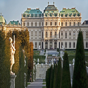

Vienna, also described as Europe's cultural capital, is a metropolis with unique charm, vibrancy and flair. It boasts
outstanding infrastructure, is clean and safe, and has all the inspiration that you could wish for in order to discover
this wonderful part of Europe. Vienna, the capital of Austria, 2 million inhabitants, is situated on the banks of the
Danube. The influx of visitors from all over the world has made Vienna the most popular urban tourist destination in
Austria. Vienna is a dream city for anyone with a romantic streak or an interest in history. Sightseeing opportunities
are to be found in abundance.
World's top city for quality of life

Vienna, Austria's grand capital on the Danube river, has topped consulting firm Mercer's list of cities offering the
highest quality of life for the eighth year in a row, while Baghdad is again considered the worst place to live. The
survey of 231 cities helps companies and organisations determine compensation and hardship allowances for international
staff. It uses dozens of criteria such as political stability, health care, education, crime, recreation and transport.
Vienna's inhabitants benefit from the city's cafe culture and museums, theatres and operas. Rents and public transport
costs in the city, whose architecture is marked by its past as the centre of the Habsburg empire, are cheap compared
with other western capitals.